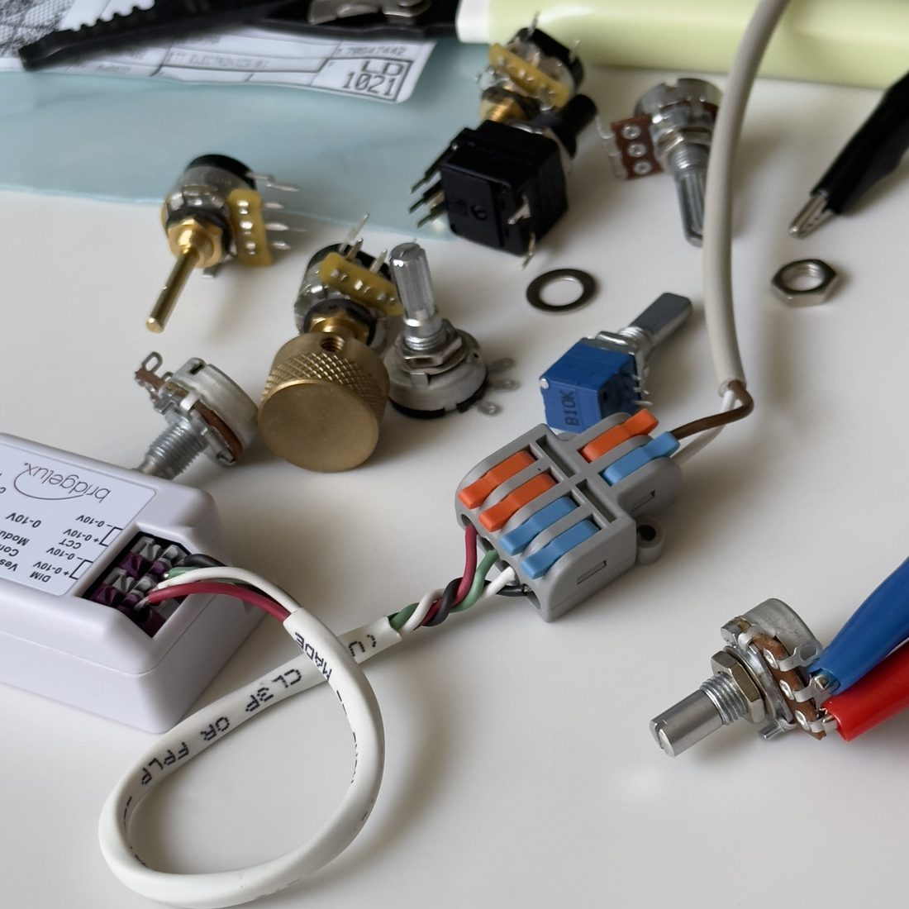

Meet the designer
Luke Simmons
Luke Simmons is an award winning designer, entrepreneur, and lighting nerd. Drawing upon five years of experience designing cutting edge architectural light fixtures, Luke is bringing his expertise to the decorative market for the first time with Layzers.
Layzers represents the union between two elements: top of the line lighting technology and the human desire to connect with nature.


How we think about light
Dawn to dusk
The central concept of our fixtures is an intrinsic understanding of how humans experience light: the sun produces dim, warm light during dawn and dusk, and during the day it produces bright, cool light.
All our fixtures strictly abide by this coupling of color temperature and brightness. Light brings happiness.